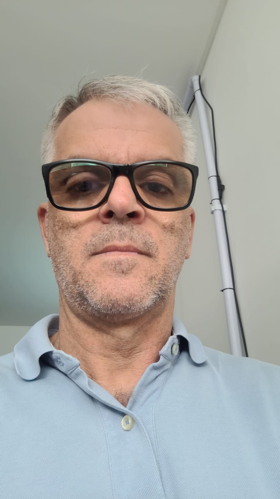

DodgerBlue
Nome: Laércio Júlio da Silva
E-mail: laercio.silva@aluno.fmpsc.edu.br
Telefone: (048) 996164695
Experiência Profissional
Cargo: Preparador de Máquina de Tampografia
Empresa: Intelbrás
Descrição: Preparação e regulagem das máquinas de tampografia.
Formação Acadêmica
Curso: Análise e Desenvolvimento de Sistemas
Intituição: Faculdade Municipal de Palhoça
Ano de Conclusão: 2025